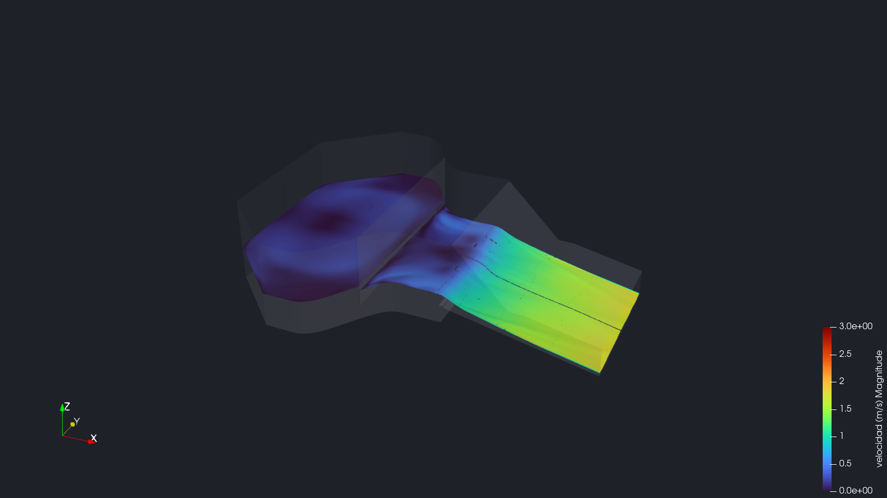
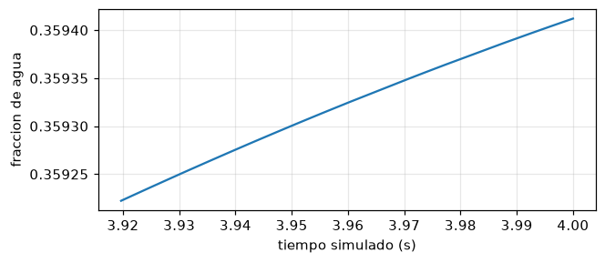

Caso p2_medio_grueso
Actualizado 08:13:46. La pagina se recarga sola cada minuto.
Tiempo simulado
4.000 s
de 4 s
Paso de tiempo
2.73e-04 s
Courant maximo
0.50
Velocidad de calculo
0.304 s simulados por hora
Tiempo restante estimado
0.0 h
hasta 4 s
Ultimo tiempo escrito
4 s
Lamina de agua (superficie libre, color = velocidad)

Volumen de agua del dominio

Fotos anteriores
t = 4 s
t = 3.9 s
t = 3.85 s
t = 3.75 s
t = 3.7 s
t = 3.6 s
t = 3.5 s
t = 3.45 s
t = 3.35 s
t = 3.25 s
t = 3.15 s
t = 3.1 s